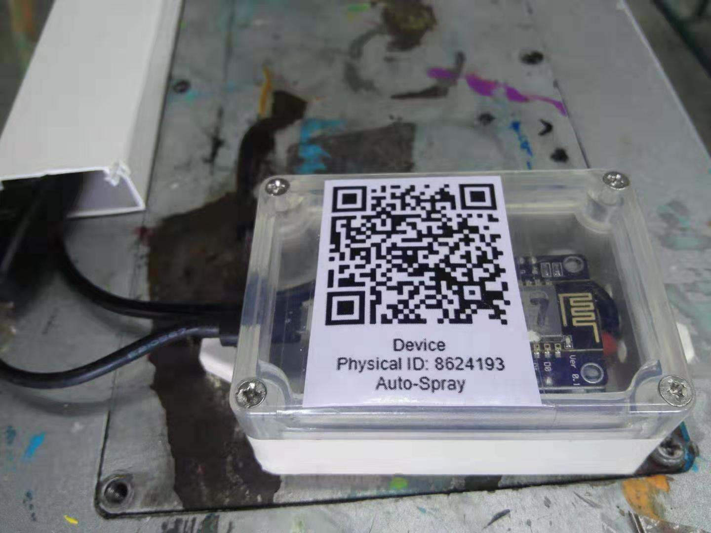

BaseBox
2019-12-03
Basebox，基盒，是一個小盒子，用來收集機器的指定訊號，並且把訊號處理後的數據上傳到 ZIOT 服務器的裝置。
Note
之前我們有時或會用 「WiFi 板」或 「IoT Device」來稱呼它。
下圖為一個 掛裝 (mount) 在一台移印機的基盒的圖片:

Basebox 可分為硬件部份及軟件部份
硬件部份
硬件部份先以 部件代號 來表示可用的組件，以便以後使用。
部件代號
點擊下表的 部件代號 可以檢視有關部件參考內容。
| 部件代號 | 中文名 | English | Spec |
|---|---|---|---|
| CAB | 3芯屏蔽信号线 | 3*0.2平方 | |
| CAS | 仪表盒 （透明盖） | Case | 尺寸：85x58x33 |
| CN | 接线端子 | Connector | |
| CN/F | 片形接线端子 | 1.25-10MM | |
| CN/U | U型接线端子 | 3.2mm | |
| FHR | 單排排針母座(直針) | Female Header Receptacles - Single Row | 蓝色 针间距：2.54MM 1x40P |
| HST | 热缩管 | Heat-shrink tubing | 直径2.5MM |
| HST/R | 红色热缩管 | 直径 5MM | |
| HST/B | 黑色热缩管 | 直径 5MM | |
| HST/T | 透明热缩管 | 直径 15.4MM | |
| MCU | NodeMCU 开发板 (ESP8266m 带CH340模块） | NodeMCU DevKit (ESP8266) | ESP8266, CH340 |
| OC | 光耦隔离模块 | Optical Coupler Module | |
| OC/12V/3V3/NPN | 光耦隔离模块 | Optical Coupler Module | 12Vin, 3V3out, NPN |
| OC/24V/3V3/PNP | 光耦隔离模块 | Optical Coupler Module | 24Vin, 3V3out, PNP |
| PCB | 双面玻纤万能板 | 尺寸：4x6MM | |
| UPS | Micro USB 火牛+带开关数据线 | Micro USB power supply | 输出电压5V 输出电流3A + 带开关数据线 |
| UXL | USB 延长线公对母 | 黑色 圆线 长度3M |
組件大致上可分為以下分組:
| 分組名稱 | 部件代號 | 備註 |
|---|---|---|
| 供電 Power Supply | UPS , UXL | 視乎電源位置與距離 , 基本上一致 |
| 處理器 Process Unit | MCU | 基本上一致 |
| 外接電路 External Circuit | CAB, CN, FHR, PCB, HST, OC | 視乎 MCU 的軟件及機器訊號源而部件可能有別 |
| 外殼 Case | CAS | 基本上一致 |
軟件部份
軟件部份是指安裝在 MCU 上的一組程式。
| 軟件名稱 | 備註 |
|---|---|
| MOS | The core firmware burnt in the MCU |
| Base Library | The library contains the common functions |
| Scripts and Config | The bootstrap scripts and related configuration |
TBD
Basebox 型號
| Codename | Software | GPIO | External Circuit | Targeted Machines |
|---|---|---|---|---|
| BB-03-24NPN | BASE03F3 | 5 | OC/24V/3V3/NPN | 注塑機 大部份自動噴油機 吹塑機 |
| BB-03-24PNP | BASE03F3 | 5 | OC/24V/3V3/PNP | 注塑機機械臂 個別自動噴油機 |
| BB-03-12NPN | BASE03F3 | 5 | OC/12V/3V3/NPN | 移印機 |
| BB-04-24PNP | BASE04 beta | 5, 6, 7 | OC/24V/3V3/PNP | 自動噴油機噴咀 (收集高頻訊號) |
關於 OC 選型
光耦隔离模块 (OC) 可以按輸入電壓(V)及機器訊號源的 PNP/NPN 屬性。
PNP: H (高) 停, L (底) 開
NPN: L (底) 停, H (高) 開